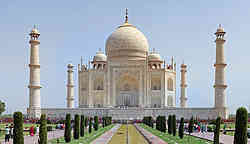

|
PREFACE
We often come across a quote which says, "Small is beautiful." This quotation clearly underlines the bottomline of my objective behind this project which is an early initiative taken by me to inspire fellow amateur programmers to design an informative site using the very basics of html, css, javascript and jQuery. I would like to thank Mr. Partha Bose for his timely guidance with the necessary expertise which immensely help me in this venture. And last but not the least, i would also like to express my gratitude to Boscom Software for publishing this.
|
|
Places of interest in India

India, it is often said, is not a country, but a continent. Stretching from the frozen summits of the Himalayas to the tropical greenery of Kerala, its expansive borders encompass an incomparable range of landscapes, cultures and people. Walk the streets of any Indian city and you’ll rub shoulders with representatives of several of the world’s great faiths, a multitude of castes and outcastes, fair-skinned, turbanned Punjabis and dark-skinned Tamils. You’ll also encounter temple rituals that have been performed since the time of the Egyptian Pharaohs, onion-domed mosques erected centuries before the Taj Mahal was ever dreamt of, and quirky echoes of the British Raj on virtually every corner.
That so much of India’s past remains discernible today is all the more astonishing given the pace of change since Independence in 1947. Spurred by the free-market reforms of the early 1990s, the economic revolution started by Rajiv Gandhi has transformed the country with new consumer goods, technologies and ways of life. Today the land where the Buddha lived and taught, and whose religious festivals are as old as the rivers that sustain them, is the second largest producer of computer software in the world, with its own satellites and nuclear weapons.
However, the presence in even the most far-flung market towns of internet cafés, smart phones and Tata Nano cars has thrown into sharp relief the problems that have bedevilled India since long before it became the world’s largest secular democracy. Poverty remains a harsh fact of life for around forty percent of India’s inhabitants; no other nation on earth has slum settlements on the scale of those in Delhi, Mumbai and Kolkata (Calcutta), nor so many malnourished children, uneducated women and homes without access to clean water and waste disposal.
Many first-time visitors find themselves unable to see past such glaring disparities. Others come expecting a timeless ascetic wonderland and are surprised to encounter one of the most materialistic societies on the planet. Still more find themselves intimidated by what may seem, initially, an incomprehensible and bewildering continent. But for all its jarring juxtapositions, intractable paradoxes and frustrations, India remains an utterly compelling destination. Intricate and worn, its distinctive patina – the stream of life in its crowded bazaars, the ubiquitous filmi music, the pungent melange of diesel fumes, cooking spices, dust and dung smoke – casts a spell that few forget from the moment they step off a plane. Love it or hate it – and most travellers oscillate between the two – India will shift the way you see the world.
go to top
Developed by SUGATO CHAKRABORTY (currently pursuing B.Tech in CSE from West Bengal University of Technology, developer at Boscom Software,2014)
|
|